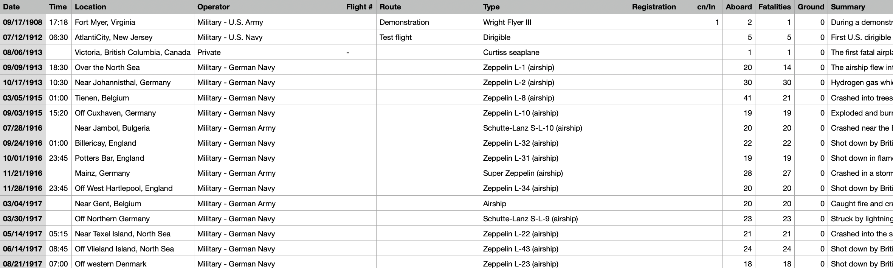
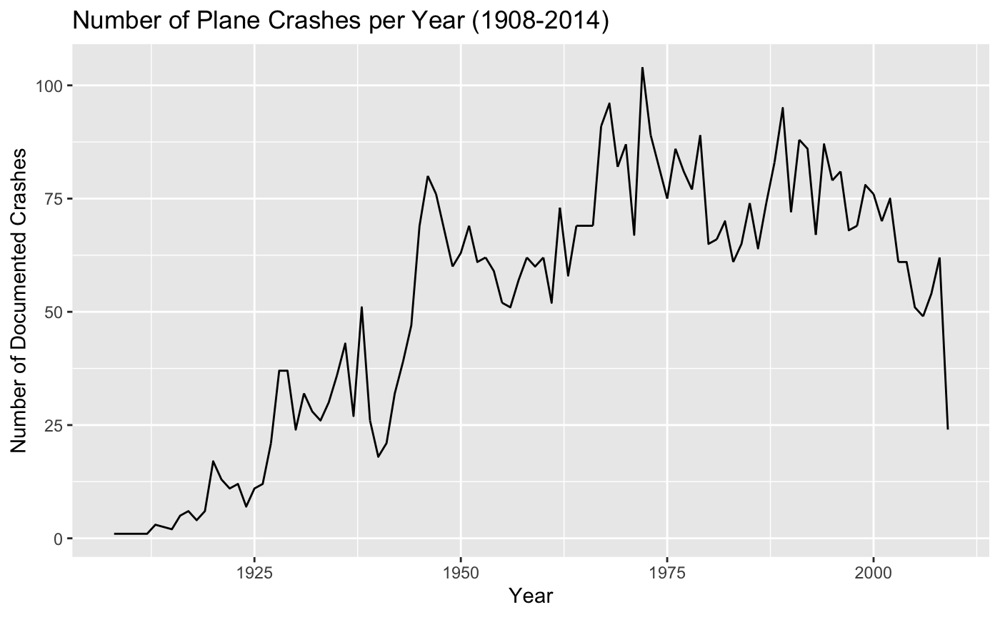
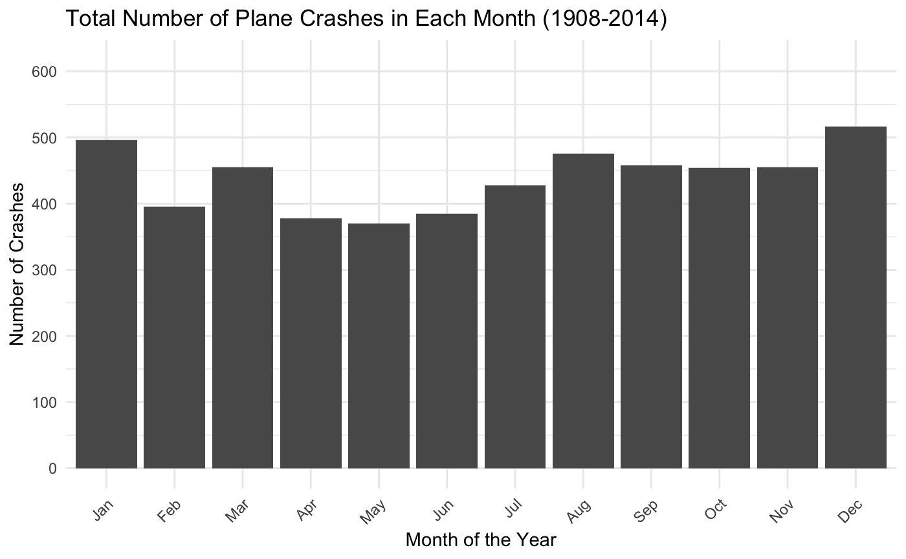
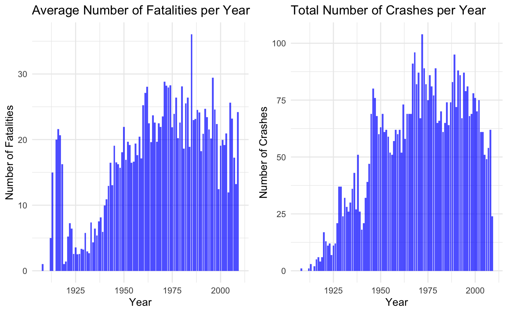
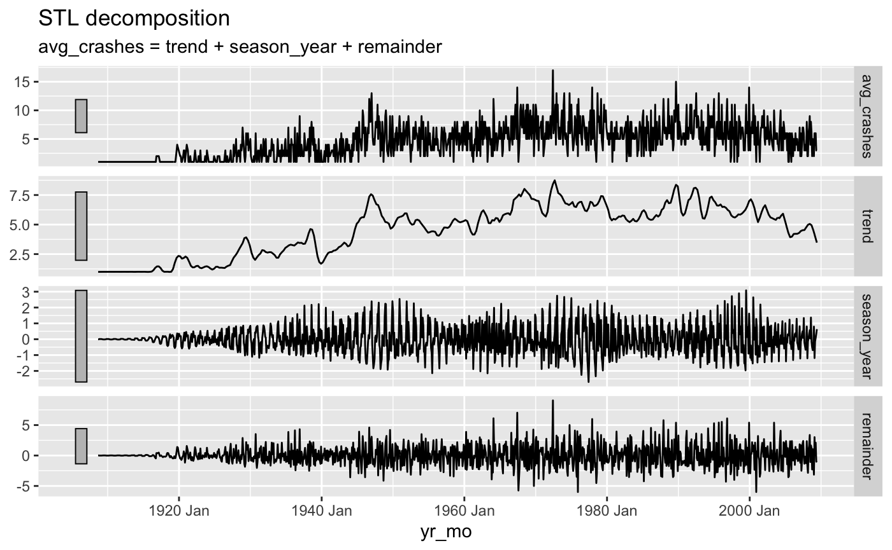
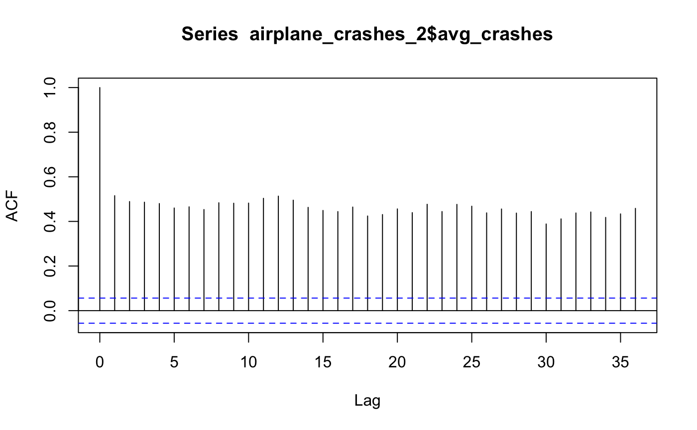
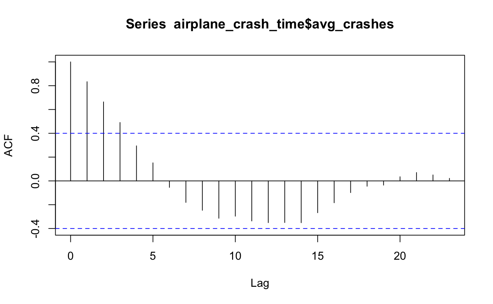
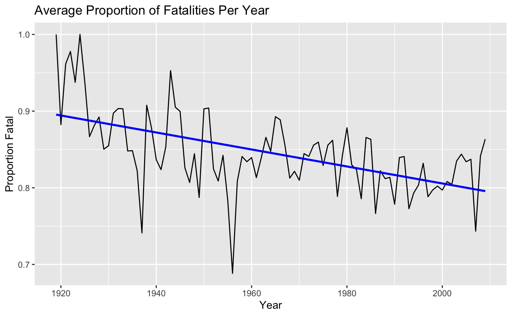

Code
library(forecast)
library(tidyverse)
library(lterdatasampler)
library(tsibble)
library(feasts)
library(lubridate)
library(zoo)
library(fable)
library(gridExtra)December 1, 2023
Author: Fletcher McConnell
GitHub Repository: https://github.com/fletcher-m/airplane_crashes
Data: Airplane Crashes Since 1908. (n.d.). Retrieved December 12, 2023, from https://www.kaggle.com/datasets/saurograndi/airplane-crashes-since-1908
As I was looking around at different data sets that I might be able to perform some statistical analysis on, I came across a set that cataloged airplane crashes from 09/17/1908 to 06/08/2009. Although the information was a bit more morbid than I had anticipated, I thought it contained some interesting potential for analysis. I ended up going down a couple of different paths with this data but the main question that I wanted to answer was if there are any discernible patterns in the the airplane crashes. I specifically wanted to check for a seasonality component having to do with the months of the year and also check for patterns in the time of day that the crashes occurred. If you would like to see the complete code for all of my steps, please refer to the GitHub Repository where that is stored (link above).
This is what the dataset that I used looked like:

The main aspect of this data that I liked was the “Date” and “Time” columns. I wanted to perform some sort of time series analysis on this. I was curious if there are any seasonal trends that can be pulled out of this data. It would be interesting to know if certain times of year are more likely for a plane crash than others. I started by making some exploratory plots to see if anything interesting stood out. During this analysis, I used these packages:
First, I wanted to plot the number of crashes per year to get an idea of the general trend. This is what it looked like:

Next, I wanted to see how the number of crashes corresponded to the different months within the year. Maybe there was some sort of cycle that I could analyze later on:

I also plotted the average number of fatalities per year and compared that to the total number of crashes per year. My goal here was to see if there were any areas that had large discrepancies. It didn’t look like there were any and they followed a similar trend, which would be expected:

After looking at these preliminary graphs, I decided to continue with my original idea of performing a time series analysis to see if there were any seasonal trends. I had to do a bit of data wrangling here in order to get it into the correct format to perform a decomposition analysis.

After looking at the decomposition, it looked like the seasonal component plays a very small part in the data. I then plotted an ACF plot to visualize this a little bit differently.

As you can see, each month is correlated with every other month in essentially that same capacity, meaning there is no evidence for a seasonal trend. If there was a seasonal trend, I would expect more of a split between positive and negative correlation occurring every 6 lags or so (half a year).
Even though there was not evidence of a seasonal trend, I was still curious about whether there were any daily patterns in crashes. Maybe more crashes occur during one time of day and not another. I made another ACF plot to show this relationship. To make this plot, I found the average number of crashes during each hour of the day across the whole time period of the data.

There is some seasonality within the time of the day but most of the correlations are withing the 95% confidence interval and, so, are not statistically significant. I compared this with a plot of the number of average number of crashes during each hour of the day and it is as one would expect. There are more crashes from about 8 am to 8pm than the rest of the day. This can be explained because this is the period of time when the most flights are occurring.
After finding out that there aren’t seasonal patterns in this data, I decided to switch from time series into a little bit of regression analysis. I wanted to find out if the proportion of fatalities (to total on board) decreased at all as the years progressed. My thinking behind this was that airplane safety improved with better technology and pilot training improved as well. So, the crashes that did occur might not have been as fatal as earlier flights. The following plot shows the average proportion of fatalities per year.
airplane_fatal <- airplane_crashes |>
group_by(Year) |>
summarize(AvgPropFatal = mean(Fatalities/Aboard, na.rm = TRUE)) |>
filter(Year >= 1919)
ggplot(airplane_fatal, aes(x = Year, y = AvgPropFatal)) +
geom_line() +
geom_smooth(method = "lm", se = FALSE, color = "blue") +
labs(title = "Average Proportion of Fatalities Per Year",
y = "Proportion Fatal")
Just from looking at this data, it seems like there is a downward trend. I ran a linear regression model to gain a bit more insight.
The results showed a slight, although statistically significant trend downward. With every year of change, the fatality proportion decreases by -0.001. It is very small but still is an interesting insight. It is important to mention that the R squared value was 0.30, which indicates that the year only is able explain 30 % of the decline in the proportion of fatality. There could be so many other factors at play here and I was a bit limited with the data that I had. I decided to test one small piece, and that was to include whether or not a plane was a military plane. I ran another linear regression model including this additional variable.
After running this, in an attempt to try to add in another variable that could help explain the data, I added a dummy variable “IsMilitary”. This was taken from a column that had either a value of 1 (military plane) or 0 (non-military plane). After adding this variable into the regression model, the R squared value increased from 0.0036 to 0.022. This increase is so small, but still an interesting finding.
Although I didn’t find any conclusive evidence of trends, the data set was limited in some ways. It was not a complete list of all plane crashes. I confirmed this by looking up some major crashes and seeing that they were not displayed in the data. There are so many variables that contribute to whether a plan crashes or not, and many of these are uncontrollable like bird strikes (Winston, n.d.). The time of year / day does not have much impact but there might be cycles occurring over longer time periods (decades). I found that I was limited by the data in the way that it was organized. I would have liked to group by airplane size but this was not noted. I would have also liked to do some analysis on the regions where each crash occurred. There was no standard way that the location data was input, so it would be very difficult to filter for this.
Although it looks like there are a lot of plane crash incidents from this data, modern plane crashes are incredibly rare. If you ever want to reassure yourself, check out a website that shows all of the planes that are currently in flight and see just how many successful flights there are.
@online{mcconnell2023,
author = {McConnell, Fletcher},
title = {Airplane {Crash} {Statistical} {Analyis}},
date = {2023-12-01},
url = {https://fletcher-m.github.io/blog/2023-12-01-airplane-crash-analysis/},
langid = {en}
}